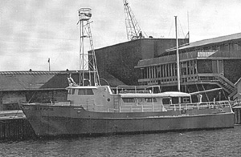

|  copyright - WHOI |
|
In 1969 Mr. Roger R. Nobel of Norwell, MA, donated Vip Flyer
to WHOI for scientific research. On June 22, 1970, Vip Flyer
was chartered by Brandeis University to conduct a search for ship wrecks
in Buzzards Bay and Vineyard Sound. The thirty students studying
archeology and history were successful in locating the wrecks of Vineyard
Sound Lighthouse, Sea Comet, Tojan, and Lunet.